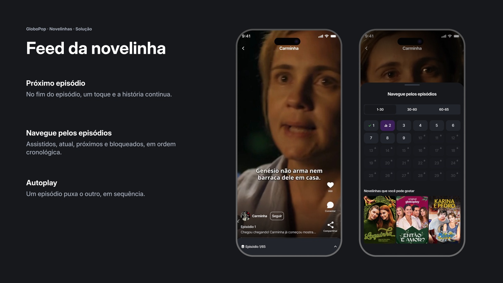
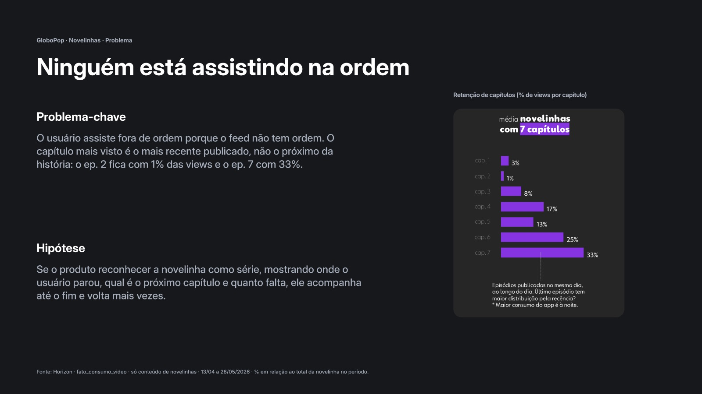
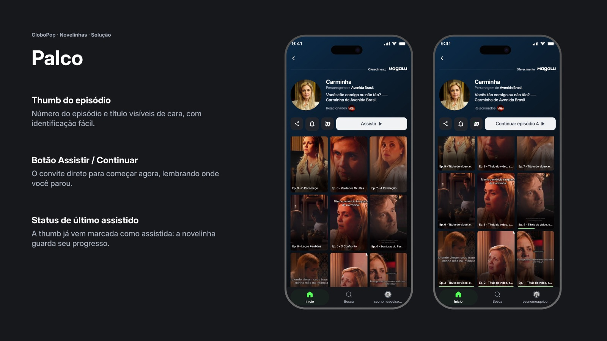

Globo · GloboPop
Agora ninguém mais perde o próximo capítulo
Novelinhas & Microdramas: dar ordem, memória e continuidade às séries verticais do GloboPop.

01 · Contexto
Séries vivendo num feed de vídeos soltos
O GloboPop é o app de vídeos curtos da Globo. As novelinhas são séries em vídeo vertical, com tudo que “série” exige: ordem, memória e continuidade. Mas elas nasciam dentro de um feed feito para vídeos soltos.
Meu papel: conduzi o projeto de ponta a ponta: análise de dados, benchmark, princípios, ideação, telas, cenários com o Globoplay e handoff.
02 · Problema
Ninguém está assistindo na ordem
O capítulo mais visto era o mais recente publicado, não o próximo da história: o ep. 2 ficava com 1% das views e o ep. 7 com 33%.

03 · Processo
Parti do dado, não da ideia
- Dados do Horizon: retenção por capítulo e recorrência
- Voz do usuário: avaliações nas lojas e comentários no app, que pediam novelinha
- Benchmark: TikTok, YouTube, Netflix, PineDrama, Discord e Globoplay
- Princípios de comportamento: histórias incompletas nos puxam de volta (efeito Zeigarnik) e ver o progresso acelera o fim
- Ideação em dois cenários (GloboPop e Globoplay), telas, documentação e handoff
04 · Solução
Cinco pontos de contato
A solução não é uma tela nova. É fazer a novelinha se comportar como série em cada lugar onde ela aparece.
- Consumo: CTA “Acompanhar novelinha” e identificação do episódio sempre à vista.
- Feed da novelinha: próximo episódio, navegação entre episódios e autoplay.
- Palco: thumbs numeradas, status de assistido e botão Continuar.
- Notificação: aviso de episódio novo para não perder o timing da história.
- Busca: área dedicada à descoberta de novelinhas.
- Ponte com o Globoplay: quando a história continua lá, o produto avisa antes, durante e depois do consumo.

05 · Resultados
Status e como medir
A proposta está sendo implementada no GloboPop. Ainda não há dados pós-lançamento, então estes são os indicadores que vou acompanhar:
- Retenção por capítulo: o ep. 2 sair de 1% e a curva voltar a ser decrescente
- Conclusão: % de usuários que chegam ao último episódio
- Recorrência: dias por semana de quem acompanha novelinha
- Ponte: cliques no touchpoint do Globoplay
06 · Aprendizados
O que levo deste projeto
- O dado muda a pergunta. Sem o Horizon, eu teria desenhado um feed mais bonito. Com ele, o problema virou ordem e continuidade.
- Modelo mental vence novidade. O usuário espera que uma série funcione como nas plataformas que já usa.
- Dois apps, uma jornada. O touchpoint do Globoplay exigiu pensar onde a história termina para o usuário, não onde termina o app.
Próximo projeto
Goper · A academia que cabe na rotina
Globo · GloboPop
Now nobody misses the next episode
Microdramas & Soaps: bringing order, memory and continuity to GloboPop’s vertical series.
01 · Context
Series living in a feed of loose videos
GloboPop is Globo’s short-video app. The “novelinhas” are vertical video series, with everything a series needs: order, memory and continuity. But they lived inside a feed built for loose videos.
My role: I led the project end to end: data analysis, benchmark, principles, ideation, screens, scenarios with Globoplay and handoff.
02 · Problem
Nobody is watching in order
The most-watched episode was the latest published, not the next one in the story: ep. 2 had 1% of views and ep. 7 had 33%.
03 · Process
I started from data, not from an idea
- Horizon data: retention by episode and recurrence
- Voice of the user: store reviews and in-app comments, which asked for these series
- Benchmark: TikTok, YouTube, Netflix, PineDrama, Discord and Globoplay
- Behavioral principles: unfinished stories pull us back (Zeigarnik effect) and seeing progress speeds up completion
- Ideation in two scenarios (GloboPop and Globoplay), screens, documentation and handoff
04 · Solution
Five touchpoints
The solution isn’t a new screen. It’s making the series behave like a series everywhere it appears.
- Playback: a “Follow series” CTA and the episode always identified.
- Series feed: next episode, navigation between episodes and autoplay.
- Stage page: numbered thumbnails, watched status and a Continue button.
- Notification: a new-episode alert so you don’t miss the story’s timing.
- Search: a dedicated area to discover series.
- Bridge to Globoplay: when the story continues there, the product says so before, during and after watching.
05 · Results
Status and how to measure
The proposal is being implemented in GloboPop. There’s no post-launch data yet, so these are the indicators I’ll track:
- Retention by episode: ep. 2 rising from 1% and the curve going back to decreasing
- Completion: % of users who reach the last episode
- Recurrence: days per week for people following a series
- Bridge: clicks on the Globoplay touchpoint
06 · Learnings
What I take from this project
- Data changes the question. Without Horizon, I would have designed a prettier feed. With it, the problem became order and continuity.
- Mental model beats novelty. Users expect a series to work like it does on the platforms they already use.
- Two apps, one journey. The Globoplay touchpoint required thinking about where the story ends for the user, not where the app ends.
Next project
Goper · The gym that fits your routine